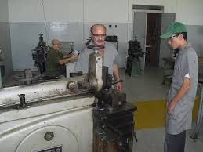
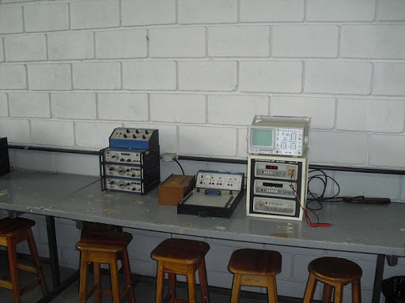

Mecânica

O Técnico em Mecânica é o profissional que elabora projetos mecânicos e sistemas automatizados.
Monta e instala máquinas e equipamentos. Planeja e realiza manutenção.
Desenvolve processos de fabricação e montagem de conjuntos mecânicos.
Elabora documentação, realiza compras e vendas técnicas, cumpre normas e procedimentos de segurança no trabalho e preservação ambiental.
Saiba mais
Eletrônica

O profissional mais requisitado em todos os ramos da industria, com as novas tecnologias em softwares de programação e controle de processos industriais,
o técnico em eletrônica atua de forma única, participando das programações , projetos e desenvolvimentos de soluções e manutenção de sistemas ,
em redes de comunicação, aplicativos desenvolvidos em linguagem de máquina.
Saiba mais